Go out.
Find something.
Choose an expedition and take the Companion along. Gather supplies, check your Cargo and decide when to come home. The wider game will add wild encounters and new places to explore.
Explore / Gather / ReturnLittle Beechos.
Big “what if?” energy.
Meet curious creatures. Discover what makes them tick. Build a lineage nobody else has. A hands-on, open-source game with advanced genomics underneath—and a whole world of “what if?” ahead.

For curious minds, happy tinkerers and anyone who has ever wondered: what happens if I try this?
Choose an expedition and take the Companion along. Gather supplies, check your Cargo and decide when to come home. The wider game will add wild encounters and new places to explore.
Explore / Gather / ReturnEvery sample is a little mystery. Browse your collection, choose a sample and follow its own trail of discoveries. Illustrated findings show what you know and what’s still a possibility. Keep that knowledge when you head out for more supplies.
Observe / Research / UnderstandDiscover the forms your sample supports. Preview one, change your mind, then review the supplies before starting incubation. Open it deliberately and meet your saved Beecho. Training and breeding will grow the wider family story.
Create / Connect / BreedThe Core V1 software prototype connects gathering, illustrated research, deliberate creation and shared visits. Breeding, training and the wider living world remain in development.
There’s more to a Beecho than its looks. The game’s fictional genomics framework connects inherited traits, abilities and what a Beecho might pass on. Research reveals those possibilities a piece at a time. Core V1 explores a small creature family through different sample discoveries and supported forms. The larger genetics and breeding experience is still being built.
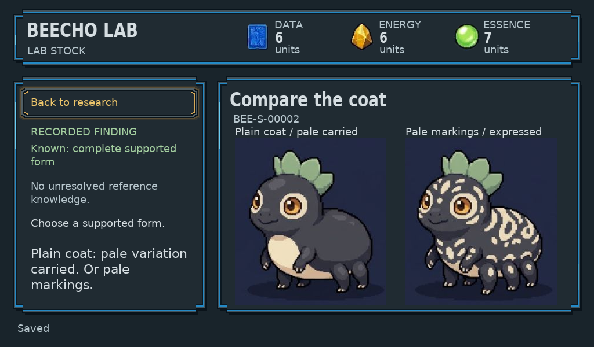
A Beecho can carry a trait you can’t see. Research and family history give you clues to what might appear in a future generation. There’s a reason to keep looking.
Chase unusual markings, explore a useful ability or develop your own distinctive family. Inherited traits combine and influence one another, making every pairing an experiment worth thinking about.
Genes give each Beecho its starting possibilities. The wider design brings environment, development and training into its life, so family resemblance can sit alongside an individual story.
The design includes traits shaped by several genes, genes that influence each other, hidden inherited variants, and rules connecting biology to abilities. Inheritance, environment and learned experience each have their own part to play. Core V1 uses a small authored family with bounded discoveries and supported forms. It retains original portraits and controlled descriptions; this local proof does not generate novel art or provide a cloud service.
Explore the open genetics framework →Designed for a complete local adventure. A wider world when you want one.
Explore, research, create, breed and print. The core game lives with your kit, ready to play without a cloud subscription or a phone.
Take your discoveries further. Join a worldwide network of curious breeders and collectors, and find possibilities beyond your own kit.
The current preview runs one saved local world with simulated device communication. Nearby-kit exchange and Cloud Pass services are planned; physical kits, availability and pricing have not been announced.
Something to take with you.
Somewhere to follow a hunch.
A home to come back to.
One portable, three modes: Probe for expeditions, Cargo for earned supplies and samples, and Companions for travelling Beechos. Switch views without interrupting your outing.
The current prototype also lets you inspect a revealed resident and spend time together in Companions. Lab and Companion record that visit for the same individual. Wild capture, party assignment and training are still being developed.
Probe / Cargo / Companions
Home brings you back to the Lab overview. Research opens your collection, then a workbench for the sample you choose. Spend Companion-gathered supplies on discoveries, preview a supported form and review creation before committing.
The Raspberry Pi 4 is the Lab development reference. Pick it up to follow a hunch, or use it at the dock. The intended living display brings habitats, Beechos and research into view.
Research / Create / DiscoverThe shared dock, or Caddy, is designed to charge both instruments, print discovery records and keep habitats, residents, stored supplies and device status close by.
The Lab carries the visual living world; the dock keeps the overview. The software prototype shows accepted world summaries and a simulated print flow. Disconnected views label their saved snapshot as cached, with its timestamp. Charging and physical printing still need hardware proof.
Charge / Print / Keep trackCollect for beauty.
Experiment for possibility.
Explore just because.
Pursue unusual markings, a useful ability or a lineage that thrives in a particular environment. There is no single ideal Beecho everyone has to make.
The game preserves individual identity and the discoveries behind each creation. Another player’s discovery stays theirs: scanning a Beecho doesn’t grant ownership or breeding permission.
These retained illustrated concepts informed the instruments’ visual direction. The current native software below shows what is implemented; these images remain references.
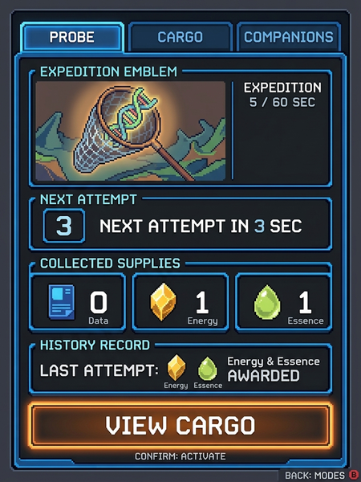
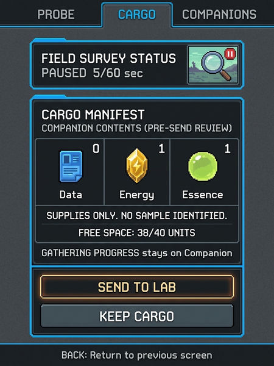
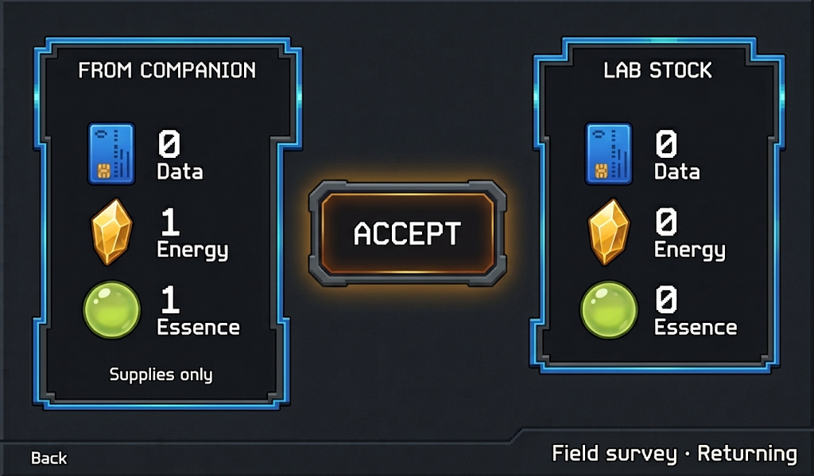
Use gathered supplies to try combinations, follow clues and discover useful recipes. Your encyclopedia retains what you learn for the next experiment.
Explore environments with their own populations, resources and conditions. Inherited affinities help explain where a Beecho may thrive; exact habitat simulation rules are still being designed.
Return to partially decoded samples, compare new findings with familiar families, and decide which investigation or lineage deserves your attention next.
From a little screen
to your field notebook.
The shared dock’s intended printer brings the collection into the physical world. A Beecho record can become something to keep, compare or share alongside the instruments you play with.
Specimen cards, research records and family trees turn your discoveries into a collection you can spread across the table. The optional Cloud Pass adds access to lineage records and certificates through the global network. Print formats are still in development.
Play it. Understand it.
Make it your own.
The rules, the code, the making of it: Beecho Lab is being built in the open. Follow a discovery all the way from a Beecho’s traits to the logic that makes them possible.
Read the game systems. Explore the software. Follow the hardware and enclosure sources as they develop. Learn from it, experiment with your own ideas, or contribute something back.
Explore the source →Software: AGPL-3.0 · Hardware sources: CERN-OHL-S-2.0 · Documentation and eligible art: CC BY-SA 4.0. License details
Take the Companion out, gather whole supplies and send your haul home. Accept them at the Lab, then explore your sample collection. Follow illustrated discoveries, preview a supported form and review its creation cost before incubating. Meet your saved Beecho at the Lab or Companion.
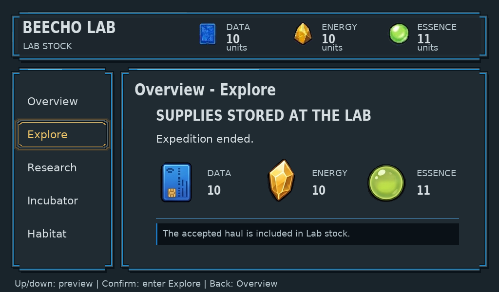
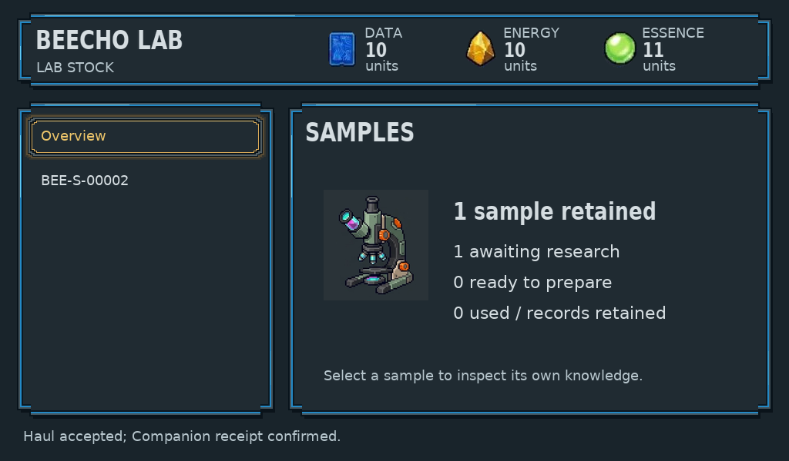
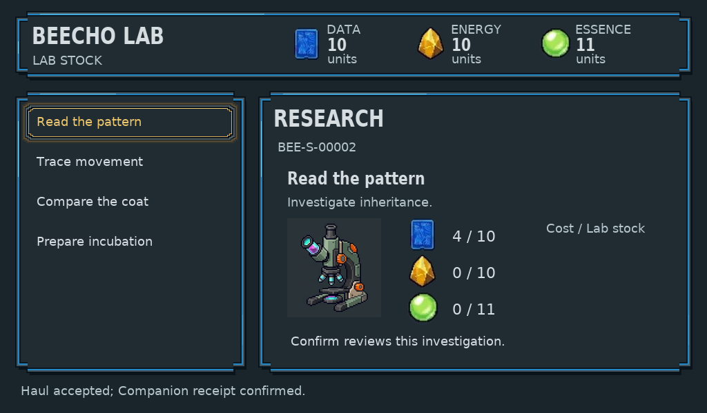
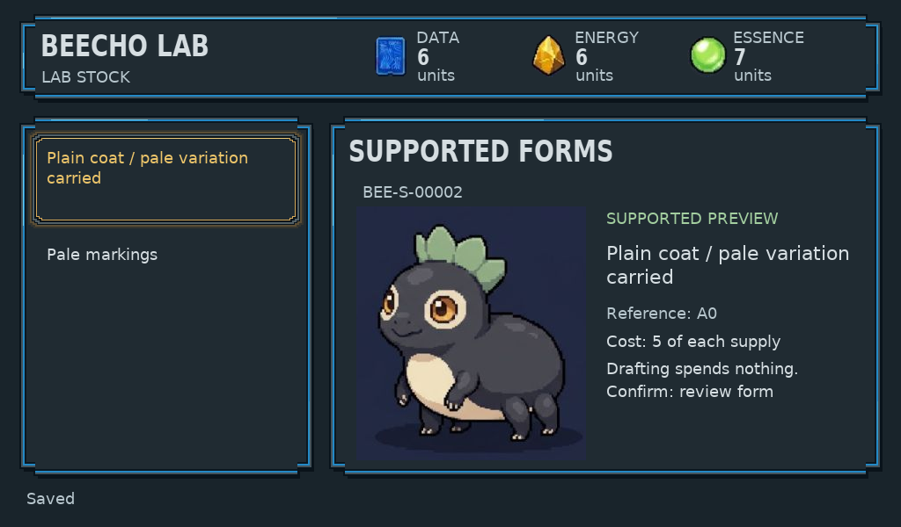
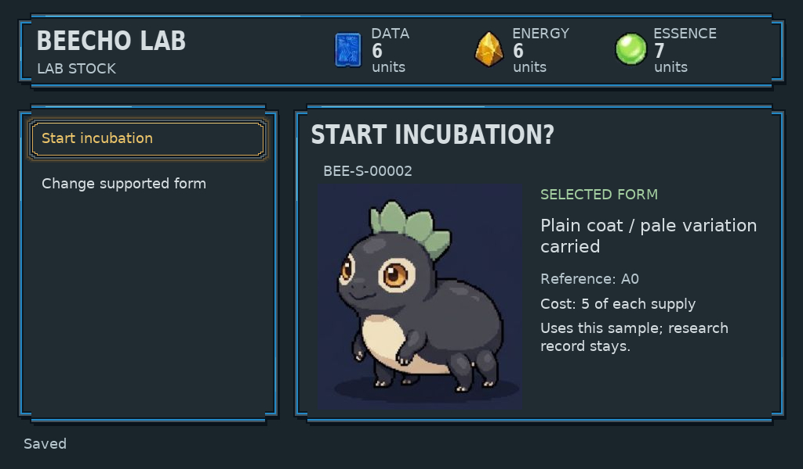
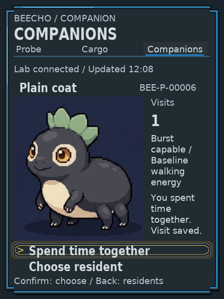
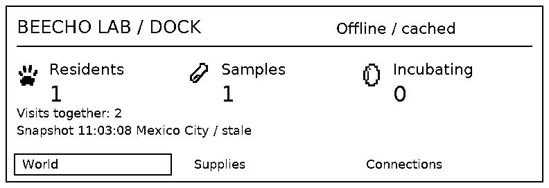
This is a small authored creature family using retained original art, with simulated wireless exchange and printing. Physical hardware, sensors and charging, global services, capture and training, and full habitat ecology remain in development. Each new sandbox release starts a fresh shared game; reopening the same release keeps saved progress.
Not yet. Beecho Lab is in design and prototyping. Hardware renders and illustrated screen studies are concepts; the playable gallery shows actual software output. The project is not yet a complete buildable kit. A release date and selling price have not been announced.
The intended kit supports device-hosted setup and core play without a phone or cloud subscription. The current software prototype runs in a browser; dedicated hardware is still being developed.
The intended core game works locally without a Cloud Pass. Nearby-kit interaction belongs to that standalone experience. The optional pass is planned to add global trading and breeding, lineage, certificates and minigames; those services are not available in the current prototype.
The Companion gathers samples and supplies; the Lab receives them and handles research, creation and incubation. Home returns to the Lab overview, and Habitat holds your revealed residents. Core V1 lets you inspect and visit the same saved individual at Lab and Companion; disconnected Companion views are cached and cannot record new visits.
Yes. The public project contains the product specifications, code and design studies. Software uses AGPL-3.0-only, hardware sources use CERN-OHL-S-2.0, and documentation and eligible artwork use CC-BY-SA-4.0.